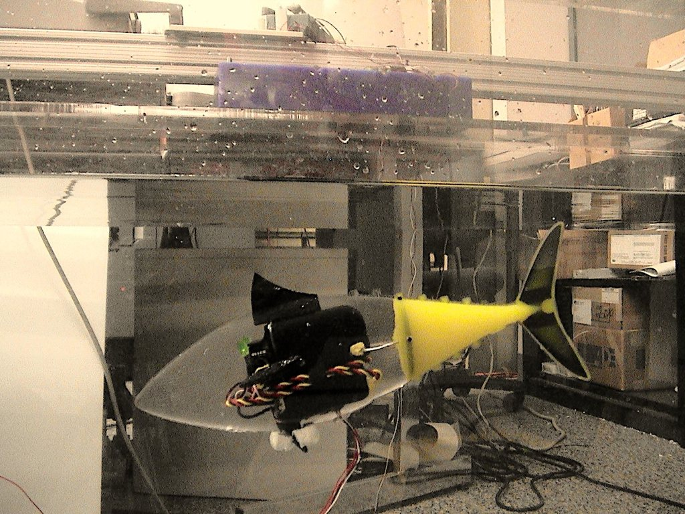

Science
Science
A 3D-printed soft robot with no electronics runs at almost 5 metres per second
Engineers at UC San Diego borrowed a trick from the compound steam engine to make an air-powered, all-soft running robot more than 100 times faster than their earlier design. It still has to be tethered to an air supply.